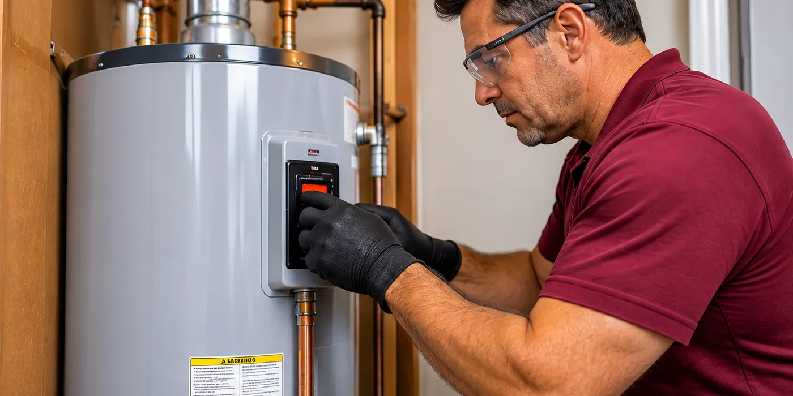

Faucet Repair in Round Rock, TX
Faucet repair for drips, loose handles, leaks, and low flow in Round Rock.
We hear calls about a faucet that “won’t stop dripping,” a handle that “just spins,” or water that comes out around the base instead of the spout. We translate those descriptions into checks of the cartridge, stem, handle screw, aerator, O-rings, and supply connections. A kitchen faucet and a bathroom sink faucet can make the same sound while failing at different parts.
We work on faucets in Round Rock, Brushy Creek, Windemere, and Wells Branch, starting with the fixture that is leaking or no longer controlling the water correctly. A drip from the spout can often wait for a planned repair, but water under the sink cabinet or from the faucet base should not wait because it can soak the cabinet floor, loosen countertop material, and damage the shutoff connections.
Dripping spout and loose handle
A steady drip from the spout after the handle is off often points to a worn cartridge, seat, washer, or seal inside the faucet body. A handle that turns too far, feels loose, or comes off in your hand can involve a stripped handle adapter, a missing set screw, or a worn stem. Water running from the handle area usually comes from a stem seal or cartridge O-ring rather than the spout.
A faucet that only delivers a trickle may have mineral buildup in the aerator, debris at the cartridge ports, or a partly closed shutoff valve beneath the sink. Water that sprays sideways from the spout can come from a split aerator screen or a damaged spray head. These symptoms can look similar from the counter, but each fault calls for different parts and different work once we inspect the fixture.
Faucet callout and inspection
We begin the callout by checking the faucet body, handle movement, spout, aerator, supply tubes, and the cabinet floor for active water. We run hot and cold water separately, inspect the shutoff valves, and check for seepage at the compression nuts and hose connections. A basic faucet inspection commonly takes about ten to twenty minutes before we know whether the problem sits in the cartridge, handle, aerator, or supply line.
After isolating the water at the shutoff valves, we remove the handle and trim, identify the cartridge or stem, and inspect the seals and retaining clip. Replacing an accessible cartridge, aerator, O-ring, or handle screw often fits into the same visit and commonly takes about thirty to ninety minutes once the correct part is on hand. A seized shutoff valve, a discontinued cartridge, corrosion inside the faucet body, or a fixture that must be removed from the countertop can require a return visit after parts are obtained.
Cartridge age and shutoff valves
Cartridge age and faucet design affect the repair because many manufacturers use different stems, clips, seals, and handle adapters across faucet lines. A common cartridge that we can identify from the faucet body usually keeps the repair straightforward, while an older or discontinued cartridge may need to be ordered. A faucet with corrosion around the retaining nut can also take more labor to open without damaging the body.
Shutoff valves and cabinet access matter before we can reach the cartridge. Working valves beneath an open sink cabinet allow us to isolate the fixture cleanly, while seized stops, packed cabinets, or a supply tube pressed against the wall add work around the repair. If the job expands beyond the faucet into an alteration that requires a permit or sign-off, we discuss that requirement before proceeding.
Model number and fixture room
Before calling, note which room contains the faucet and whether it serves a kitchen sink, bathroom sink, laundry sink, bar sink, or tub. We can use the brand name, handle shape, and a clear photo of the spout and trim to narrow down the cartridge or adapter. Look for a model number on the installation sheet, receipt, original box, or tag under the sink if one is available. Tell us roughly how old the faucet is and whether water is dripping now, leaking into the cabinet, or only failing when the handle moves. Clear enough space around the sink cabinet for us to reach the shutoff valves and supply hoses. Call BT Round Rock Plumbing at (737) 215-4933 before water at the faucet base keeps reaching the cabinet floor or countertop seam.
When we are open
Outside these hours, leave a message and we will call back.
Next: sewer line repair, or back to the home page.